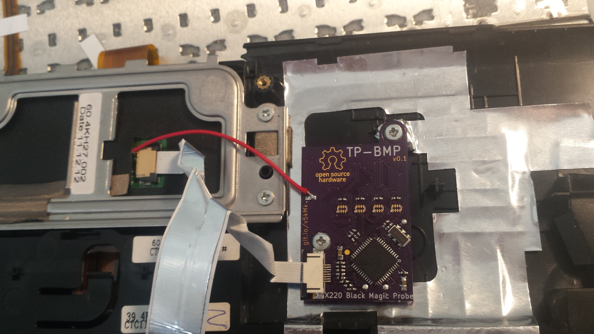
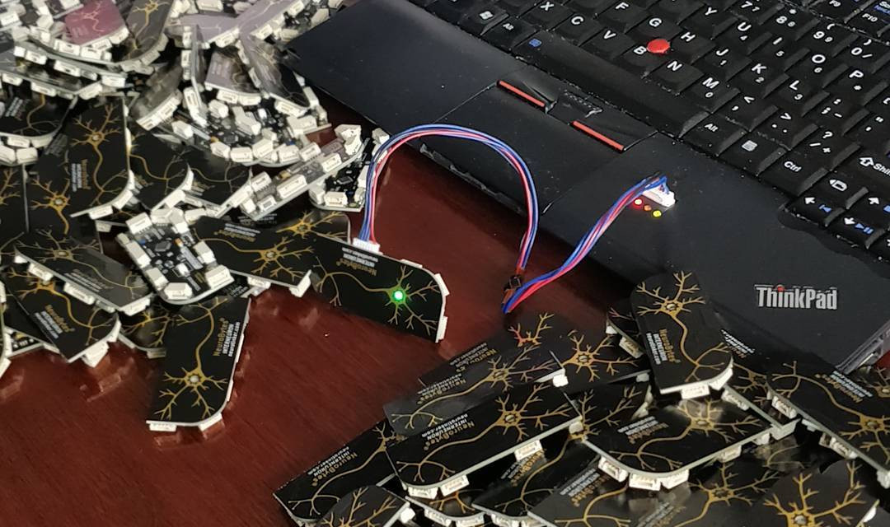

TP-BMP
"think pad, black magic probe"

A PCB remix of the Black Magic Probe a terrific open-source JTAG debugger with an onboard GDB server. My verison replaces the thumbprint reader board in my Thinkpad X220 and lets me program NeuroBytes (or pretty much any other ARM-based device) on the road.

Source files, more documentation
© copyright zach fredin, 2017